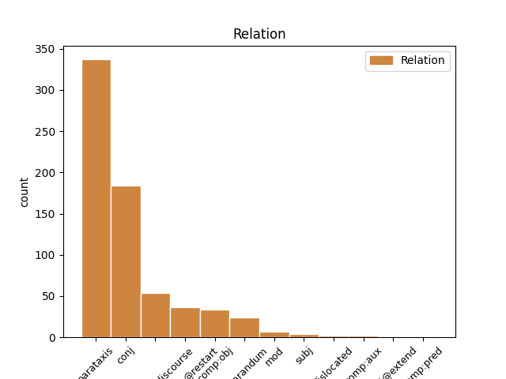
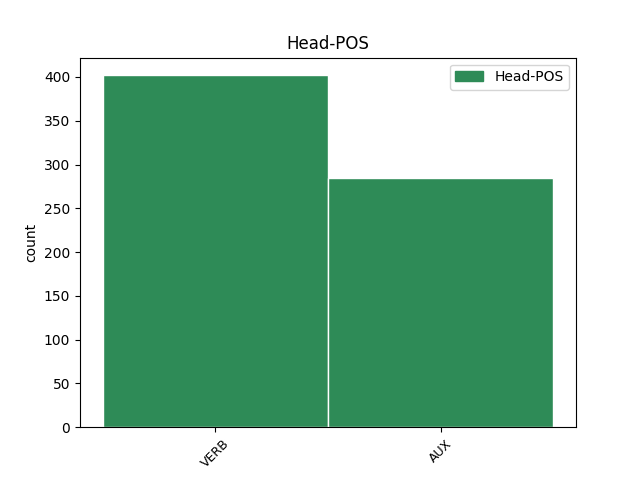
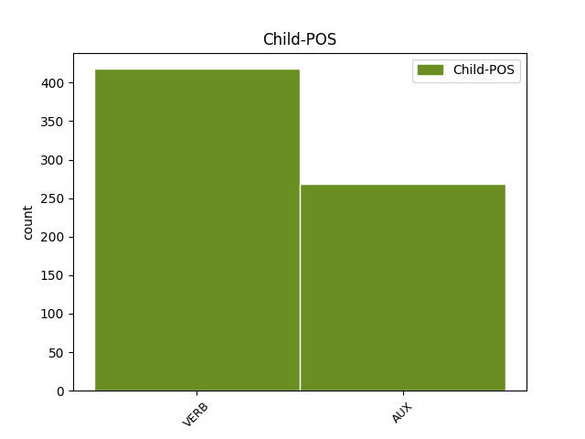

Distribution of features within this leaf



Agreement Rules sorted by frequency.
- When the dependent token is the parataxis(parataxis) of the head token, and the head token is VERB and the dependent token is VERB.
1 ja _ _ _ _ 0 _ _ _
2 delali _ _ _ _ 0 _ _ _
3 smo _ _ _ _ 0 _ _ _
4 eno _ _ _ _ 0 _ _ _
5 čisto _ _ _ _ 0 _ _ _
6 smešno _ _ _ _ 0 _ _ _
7 vajo _ _ _ _ 0 _ _ _
8 ko _ _ _ _ 0 _ _ _
9 tako _ _ _ _ 0 _ _ _
10 pač _ _ _ _ 0 _ _ _
11 moraš morati VERB Vmpr2s Aspect=Imp|Mood=Ind|Number=Sing|Person=2|Tense=Pres|VerbForm=Fin 0 _ _ _
12 hoditi _ _ _ _ 0 _ _ _
13 v _ _ _ _ 0 _ _ _
14 krogu _ _ _ _ 0 _ _ _
15 pol _ _ _ _ 0 _ _ _
16 pa _ _ _ _ 0 _ _ _
17 ljudje _ _ _ _ 0 _ _ _
18 tako _ _ _ _ 0 _ _ _
19 opazijo _ _ _ _ 0 _ _ _
20 kako _ _ _ _ 0 _ _ _
21 hodiš _ _ _ _ 0 _ _ _
22 pol _ _ _ _ 0 _ _ _
23 ti _ _ _ _ 0 _ _ _
24 pa _ _ _ _ 0 _ _ _
25 tako _ _ _ _ 0 _ _ _
26 povejo povedati VERB Vmer3p Aspect=Perf|Mood=Ind|Number=Plur|Person=3|Tense=Pres|VerbForm=Fin 11 parataxis _ msd=Ggdstm|word=povejo
27 ne _ _ _ _ 0 _ _ _
28 vem _ _ _ _ 0 _ _ _
29 kako _ _ _ _ 0 _ _ _
30 k _ _ _ _ 0 _ _ _
31 [gap] _ _ _ _ 0 _ _ _
32 kako _ _ _ _ 0 _ _ _
33 hodiš _ _ _ _ 0 _ _ _
34 ne _ _ _ _ 0 _ _ _
35 vem _ _ _ _ 0 _ _ _
36 kako _ _ _ _ 0 _ _ _
37 delaš _ _ _ _ 0 _ _ _
38 in _ _ _ _ 0 _ _ _
39 pol _ _ _ _ 0 _ _ _
40 tako _ _ _ _ 0 _ _ _
41 moraš _ _ _ _ 0 _ _ _
42 še _ _ _ _ 0 _ _ _
43 to _ _ _ _ 0 _ _ _
44 bolj _ _ _ _ 0 _ _ _
45 poudariti _ _ _ _ 0 _ _ _
1 reklamo _ _ _ _ 0 _ _ _
2 sem biti AUX Va-r1s-n Mood=Ind|Number=Sing|Person=1|Polarity=Pos|Tense=Pres|VerbForm=Fin 0 _ _ _
3 videla _ _ _ _ 0 _ _ _
4 nisem biti AUX Va-r1s-y Mood=Ind|Number=Sing|Person=1|Polarity=Neg|Tense=Pres|VerbForm=Fin 2 parataxis _ msd=Gp-spe-d|word=nisn
5 pa _ _ _ _ 0 _ _ _
6 še _ _ _ _ 0 _ _ _
7 pila _ _ _ _ 0 _ _ _
1 ja _ _ _ _ 0 _ _ _
2 delali _ _ _ _ 0 _ _ _
3 smo _ _ _ _ 0 _ _ _
4 eno _ _ _ _ 0 _ _ _
5 čisto _ _ _ _ 0 _ _ _
6 smešno _ _ _ _ 0 _ _ _
7 vajo _ _ _ _ 0 _ _ _
8 ko _ _ _ _ 0 _ _ _
9 tako _ _ _ _ 0 _ _ _
10 pač _ _ _ _ 0 _ _ _
11 moraš _ _ _ _ 0 _ _ _
12 hoditi _ _ _ _ 0 _ _ _
13 v _ _ _ _ 0 _ _ _
14 krogu _ _ _ _ 0 _ _ _
15 pol _ _ _ _ 0 _ _ _
16 pa _ _ _ _ 0 _ _ _
17 ljudje _ _ _ _ 0 _ _ _
18 tako _ _ _ _ 0 _ _ _
19 opazijo _ _ _ _ 0 _ _ _
20 kako _ _ _ _ 0 _ _ _
21 hodiš _ _ _ _ 0 _ _ _
22 pol _ _ _ _ 0 _ _ _
23 ti _ _ _ _ 0 _ _ _
24 pa _ _ _ _ 0 _ _ _
25 tako _ _ _ _ 0 _ _ _
26 povejo povedati VERB Vmer3p Aspect=Perf|Mood=Ind|Number=Plur|Person=3|Tense=Pres|VerbForm=Fin 0 _ _ _
27 ne _ _ _ _ 0 _ _ _
28 vem _ _ _ _ 0 _ _ _
29 kako _ _ _ _ 0 _ _ _
30 k _ _ _ _ 0 _ _ _
31 [gap] _ _ _ _ 0 _ _ _
32 kako _ _ _ _ 0 _ _ _
33 hodiš _ _ _ _ 0 _ _ _
34 ne _ _ _ _ 0 _ _ _
35 vem _ _ _ _ 0 _ _ _
36 kako _ _ _ _ 0 _ _ _
37 delaš _ _ _ _ 0 _ _ _
38 in _ _ _ _ 0 _ _ _
39 pol _ _ _ _ 0 _ _ _
40 tako _ _ _ _ 0 _ _ _
41 moraš morati VERB Vmpr2s Aspect=Imp|Mood=Ind|Number=Sing|Person=2|Tense=Pres|VerbForm=Fin 26 conj _ msd=Ggnsde|word=morš
42 še _ _ _ _ 0 _ _ _
43 to _ _ _ _ 0 _ _ _
44 bolj _ _ _ _ 0 _ _ _
45 poudariti _ _ _ _ 0 _ _ _
1 to _ _ _ _ 0 _ _ _
2 je biti AUX Va-r3s-n Mood=Ind|Number=Sing|Person=3|Polarity=Pos|Tense=Pres|VerbForm=Fin 0 _ _ _
3 čisto _ _ _ _ 0 _ _ _
4 naša _ _ _ _ 0 _ _ _
5 ideja _ _ _ _ 0 _ _ _
6 se _ _ _ _ 0 _ _ _
7 pravi _ _ _ _ 0 _ _ _
8 eee _ _ _ _ 0 _ _ _
9 s _ _ _ _ 0 _ _ _
10 [gap] _ _ _ _ 0 _ _ _
11 kompletno _ _ _ _ 0 _ _ _
12 zamisel _ _ _ _ 0 _ _ _
13 je biti AUX Va-r3s-n Mood=Ind|Number=Sing|Person=3|Polarity=Pos|Tense=Pres|VerbForm=Fin 2 conj _ msd=Gp-ste-n|word=je
14 slovenska _ _ _ _ 0 _ _ _
15 pamet _ _ _ _ 0 _ _ _
16 ustvarila _ _ _ _ 0 _ _ _
1 ampak _ _ _ _ 0 _ _ _
2 eee _ _ _ _ 0 _ _ _
3 skratka _ _ _ _ 0 _ _ _
4 si biti AUX Va-r2s-n Mood=Ind|Number=Sing|Person=2|Polarity=Pos|Tense=Pres|VerbForm=Fin 0 _ _ _
5 pravi _ _ _ _ 0 _ _ _
6 kleni _ _ _ _ 0 _ _ _
7 pohorec _ _ _ _ 0 _ _ _
8 kako _ _ _ _ 0 _ _ _
9 se _ _ _ _ 0 _ _ _
10 pa _ _ _ _ 0 _ _ _
11 štekate štekati VERB Vmpr2p Aspect=Imp|Mood=Ind|Number=Plur|Person=2|Tense=Pres|VerbForm=Fin 4 parataxis _ msd=Ggnsdm|word=štekate
12 z _ _ _ _ 0 _ _ _
13 onimi _ _ _ _ 0 _ _ _
14 savinjčani _ _ _ _ 0 _ _ _
15 ? _ _ _ _ 0 _ _ _
1 zdajle _ _ _ _ 0 _ _ _
2 gledam gledati VERB Vmpr1s Aspect=Imp|Mood=Ind|Number=Sing|Person=1|Tense=Pres|VerbForm=Fin 0 _ _ _
3 si biti AUX Va-r2s-n Mood=Ind|Number=Sing|Person=2|Polarity=Pos|Tense=Pres|VerbForm=Fin 2 parataxis _ msd=Gp-sde-n|word=si
4 že _ _ _ _ 0 _ _ _
5 pila _ _ _ _ 0 _ _ _
6 eee _ _ _ _ 0 _ _ _
7 frutiq _ _ _ _ 0 _ _ _
8 ? _ _ _ _ 0 _ _ _
9 [speaker:laughter] _ _ _ _ 0 _ _ _
1 ja _ _ _ _ 0 _ _ _
2 delali _ _ _ _ 0 _ _ _
3 smo _ _ _ _ 0 _ _ _
4 eno _ _ _ _ 0 _ _ _
5 čisto _ _ _ _ 0 _ _ _
6 smešno _ _ _ _ 0 _ _ _
7 vajo _ _ _ _ 0 _ _ _
8 ko _ _ _ _ 0 _ _ _
9 tako _ _ _ _ 0 _ _ _
10 pač _ _ _ _ 0 _ _ _
11 moraš _ _ _ _ 0 _ _ _
12 hoditi _ _ _ _ 0 _ _ _
13 v _ _ _ _ 0 _ _ _
14 krogu _ _ _ _ 0 _ _ _
15 pol _ _ _ _ 0 _ _ _
16 pa _ _ _ _ 0 _ _ _
17 ljudje _ _ _ _ 0 _ _ _
18 tako _ _ _ _ 0 _ _ _
19 opazijo _ _ _ _ 0 _ _ _
20 kako _ _ _ _ 0 _ _ _
21 hodiš _ _ _ _ 0 _ _ _
22 pol _ _ _ _ 0 _ _ _
23 ti _ _ _ _ 0 _ _ _
24 pa _ _ _ _ 0 _ _ _
25 tako _ _ _ _ 0 _ _ _
26 povejo _ _ _ _ 0 _ _ _
27 ne _ _ _ _ 0 _ _ _
28 vem _ _ _ _ 0 _ _ _
29 kako _ _ _ _ 0 _ _ _
30 k _ _ _ _ 0 _ _ _
31 [gap] _ _ _ _ 0 _ _ _
32 kako _ _ _ _ 0 _ _ _
33 hodiš hoditi VERB Vmpr2s Aspect=Imp|Mood=Ind|Number=Sing|Person=2|Tense=Pres|VerbForm=Fin 0 _ _ _
34 ne _ _ _ _ 0 _ _ _
35 vem vedeti VERB Vmpr1s Aspect=Imp|Mood=Ind|Number=Sing|Person=1|Tense=Pres|VerbForm=Fin 33 parataxis@discourse _ msd=Ggnspe|word=em
36 kako _ _ _ _ 0 _ _ _
37 delaš _ _ _ _ 0 _ _ _
38 in _ _ _ _ 0 _ _ _
39 pol _ _ _ _ 0 _ _ _
40 tako _ _ _ _ 0 _ _ _
41 moraš _ _ _ _ 0 _ _ _
42 še _ _ _ _ 0 _ _ _
43 to _ _ _ _ 0 _ _ _
44 bolj _ _ _ _ 0 _ _ _
45 poudariti _ _ _ _ 0 _ _ _
1 to _ _ _ _ 0 _ _ _
2 so biti AUX Va-r3p-n Mood=Ind|Number=Plur|Person=3|Polarity=Pos|Tense=Pres|VerbForm=Fin 0 _ _ _
3 pač _ _ _ _ 0 _ _ _
4 eee _ _ _ _ 0 _ _ _
5 kombinacija _ _ _ _ 0 _ _ _
6 in _ _ _ _ 0 _ _ _
7 slalom _ _ _ _ 0 _ _ _
8 in _ _ _ _ 0 _ _ _
9 eee _ _ _ _ 0 _ _ _
10 če _ _ _ _ 0 _ _ _
11 računamo _ _ _ _ 0 _ _ _
12 da _ _ _ _ 0 _ _ _
13 eem _ _ _ _ 0 _ _ _
14 dodaš _ _ _ _ 0 _ _ _
15 še _ _ _ _ 0 _ _ _
16 eno _ _ _ _ 0 _ _ _
17 disciplino _ _ _ _ 0 _ _ _
18 lahko _ _ _ _ 0 _ _ _
19 osvojiš osvojiti VERB Vmer2s Aspect=Perf|Mood=Ind|Number=Sing|Person=2|Tense=Pres|VerbForm=Fin 2 conj _ msd=Ggdsde|word=osvojiš
20 toliko _ _ _ _ 0 _ _ _
21 točk _ _ _ _ 0 _ _ _
22 kot _ _ _ _ 0 _ _ _
23 jih _ _ _ _ 0 _ _ _
24 je _ _ _ _ 0 _ _ _
25 ona _ _ _ _ 0 _ _ _
26 je _ _ _ _ 0 _ _ _
27 pa _ _ _ _ 0 _ _ _
28 zares _ _ _ _ 0 _ _ _
29 eee _ _ _ _ 0 _ _ _
30 vsestranska _ _ _ _ 0 _ _ _
31 v _ _ _ _ 0 _ _ _
32 formi _ _ _ _ 0 _ _ _
33 od _ _ _ _ 0 _ _ _
34 štarta _ _ _ _ 0 _ _ _
35 do _ _ _ _ 0 _ _ _
36 cilja _ _ _ _ 0 _ _ _
37 od _ _ _ _ 0 _ _ _
38 začetka _ _ _ _ 0 _ _ _
39 sezone _ _ _ _ 0 _ _ _
40 do _ _ _ _ 0 _ _ _
41 konca _ _ _ _ 0 _ _ _
42 sezone _ _ _ _ 0 _ _ _
43 in _ _ _ _ 0 _ _ _
44 imam _ _ _ _ 0 _ _ _
45 same _ _ _ _ 0 _ _ _
46 pohvale _ _ _ _ 0 _ _ _
47 zanjo _ _ _ _ 0 _ _ _
1 ja _ _ _ _ 0 _ _ _
2 delali _ _ _ _ 0 _ _ _
3 smo _ _ _ _ 0 _ _ _
4 eno _ _ _ _ 0 _ _ _
5 čisto _ _ _ _ 0 _ _ _
6 smešno _ _ _ _ 0 _ _ _
7 vajo _ _ _ _ 0 _ _ _
8 ko _ _ _ _ 0 _ _ _
9 tako _ _ _ _ 0 _ _ _
10 pač _ _ _ _ 0 _ _ _
11 moraš _ _ _ _ 0 _ _ _
12 hoditi _ _ _ _ 0 _ _ _
13 v _ _ _ _ 0 _ _ _
14 krogu _ _ _ _ 0 _ _ _
15 pol _ _ _ _ 0 _ _ _
16 pa _ _ _ _ 0 _ _ _
17 ljudje _ _ _ _ 0 _ _ _
18 tako _ _ _ _ 0 _ _ _
19 opazijo _ _ _ _ 0 _ _ _
20 kako _ _ _ _ 0 _ _ _
21 hodiš _ _ _ _ 0 _ _ _
22 pol _ _ _ _ 0 _ _ _
23 ti _ _ _ _ 0 _ _ _
24 pa _ _ _ _ 0 _ _ _
25 tako _ _ _ _ 0 _ _ _
26 povejo povedati VERB Vmer3p Aspect=Perf|Mood=Ind|Number=Plur|Person=3|Tense=Pres|VerbForm=Fin 0 _ _ _
27 ne _ _ _ _ 0 _ _ _
28 vem _ _ _ _ 0 _ _ _
29 kako _ _ _ _ 0 _ _ _
30 k _ _ _ _ 0 _ _ _
31 [gap] _ _ _ _ 0 _ _ _
32 kako _ _ _ _ 0 _ _ _
33 hodiš hoditi VERB Vmpr2s Aspect=Imp|Mood=Ind|Number=Sing|Person=2|Tense=Pres|VerbForm=Fin 26 comp:obj _ msd=Ggnsde|word=hodeš
34 ne _ _ _ _ 0 _ _ _
35 vem _ _ _ _ 0 _ _ _
36 kako _ _ _ _ 0 _ _ _
37 delaš _ _ _ _ 0 _ _ _
38 in _ _ _ _ 0 _ _ _
39 pol _ _ _ _ 0 _ _ _
40 tako _ _ _ _ 0 _ _ _
41 moraš _ _ _ _ 0 _ _ _
42 še _ _ _ _ 0 _ _ _
43 to _ _ _ _ 0 _ _ _
44 bolj _ _ _ _ 0 _ _ _
45 poudariti _ _ _ _ 0 _ _ _
1 saj _ _ _ _ 0 _ _ _
2 samo _ _ _ _ 0 _ _ _
3 to _ _ _ _ 0 _ _ _
4 je _ _ _ _ 0 _ _ _
5 samo _ _ _ _ 0 _ _ _
6 to _ _ _ _ 0 _ _ _
7 je _ _ _ _ 0 _ _ _
8 fora _ _ _ _ 0 _ _ _
9 tega _ _ _ _ 0 _ _ _
10 ne _ _ _ _ 0 _ _ _
11 moramo _ _ _ _ 0 _ _ _
12 narediti _ _ _ _ 0 _ _ _
13 dokler _ _ _ _ 0 _ _ _
14 se _ _ _ _ 0 _ _ _
15 ne _ _ _ _ 0 _ _ _
16 menimo meniti VERB Vmpr1p Aspect=Imp|Mood=Ind|Number=Plur|Person=1|Tense=Pres|VerbForm=Fin 17 reparandum _ msd=Ggnspm|word=menmo
17 zmenimo zmeniti VERB Vmer1p Aspect=Perf|Mood=Ind|Number=Plur|Person=1|Tense=Pres|VerbForm=Fin 0 _ _ _
18 z _ _ _ _ 0 _ _ _
19 [name:personal] _ _ _ _ 0 _ _ _
20 [gap] _ _ _ _ 0 _ _ _
1 eee _ _ _ _ 0 _ _ _
2 to _ _ _ _ 0 _ _ _
3 je biti VERB Va-r3s-n Mood=Ind|Number=Sing|Person=3|Polarity=Pos|Tense=Pres|VerbForm=Fin 0 _ _ _
4 eem _ _ _ _ 0 _ _ _
5 eee _ _ _ _ 0 _ _ _
6 rastlina _ _ _ _ 0 _ _ _
7 oddaja oddajati VERB Vmpr3s Aspect=Imp|Mood=Ind|Number=Sing|Person=3|Tense=Pres|VerbForm=Fin 3 parataxis@restart _ msd=Ggnste|word=oddaja
8 kisik _ _ _ _ 0 _ _ _
9 ki _ _ _ _ 0 _ _ _
10 ga _ _ _ _ 0 _ _ _
11 j _ _ _ _ 0 _ _ _
12 [gap] _ _ _ _ 0 _ _ _
13 eee _ _ _ _ 0 _ _ _
14 ogljikov _ _ _ _ 0 _ _ _
15 dioksid _ _ _ _ 0 _ _ _
16 ki _ _ _ _ 0 _ _ _
17 ga _ _ _ _ 0 _ _ _
18 ne _ _ _ _ 0 _ _ _
19 potrebuje _ _ _ _ 0 _ _ _
1 ne _ _ _ _ 0 _ _ _
2 vem vedeti VERB Vmpr1s Aspect=Imp|Mood=Ind|Number=Sing|Person=1|Tense=Pres|VerbForm=Fin 0 _ _ _
3 natančno _ _ _ _ 0 _ _ _
4 koliko _ _ _ _ 0 _ _ _
5 policistov _ _ _ _ 0 _ _ _
6 ampak _ _ _ _ 0 _ _ _
7 zanesljivo _ _ _ _ 0 _ _ _
8 jih _ _ _ _ 0 _ _ _
9 je biti AUX Va-r3s-n Mood=Ind|Number=Sing|Person=3|Polarity=Pos|Tense=Pres|VerbForm=Fin 2 conj _ msd=Gp-ste-n|word=je
10 bilo _ _ _ _ 0 _ _ _
11 tudi _ _ _ _ 0 _ _ _
12 blizu _ _ _ _ 0 _ _ _
13 dvajset _ _ _ _ 0 _ _ _
14 do _ _ _ _ 0 _ _ _
15 petindvajset _ _ _ _ 0 _ _ _
16 ki _ _ _ _ 0 _ _ _
17 so _ _ _ _ 0 _ _ _
18 šli _ _ _ _ 0 _ _ _
19 eee _ _ _ _ 0 _ _ _
20 skozi _ _ _ _ 0 _ _ _
21 aaa _ _ _ _ 0 _ _ _
22 misijo _ _ _ _ 0 _ _ _
23 v _ _ _ _ 0 _ _ _
24 kateri _ _ _ _ 0 _ _ _
25 so _ _ _ _ 0 _ _ _
26 urili _ _ _ _ 0 _ _ _
27 iraške _ _ _ _ 0 _ _ _
28 varnostne _ _ _ _ 0 _ _ _
29 sile _ _ _ _ 0 _ _ _
30 pa _ _ _ _ 0 _ _ _
31 najsibo _ _ _ _ 0 _ _ _
32 na _ _ _ _ 0 _ _ _
33 J _ _ _ _ 0 _ _ _
34 [gap] _ _ _ _ 0 _ _ _
35 ozemlju _ _ _ _ 0 _ _ _
36 jordanije _ _ _ _ 0 _ _ _
37 ali _ _ _ _ 0 _ _ _
38 na _ _ _ _ 0 _ _ _
39 ozemlju _ _ _ _ 0 _ _ _
40 iraka _ _ _ _ 0 _ _ _
41 kot _ _ _ _ 0 _ _ _
42 se _ _ _ _ 0 _ _ _
43 je _ _ _ _ 0 _ _ _
44 zdaj _ _ _ _ 0 _ _ _
45 zgodilo _ _ _ _ 0 _ _ _
1 samo _ _ _ _ 0 _ _ _
2 je biti AUX Va-r3s-n Mood=Ind|Number=Sing|Person=3|Polarity=Pos|Tense=Pres|VerbForm=Fin 0 _ _ _
3 dobro _ _ _ _ 0 _ _ _
4 veš vedeti VERB Vmpr2s Aspect=Imp|Mood=Ind|Number=Sing|Person=2|Tense=Pres|VerbForm=Fin 2 parataxis@discourse _ msd=Ggnsde|word=veš
1 eee _ _ _ _ 0 _ _ _
2 o _ _ _ _ 0 _ _ _
3 [gap] _ _ _ _ 0 _ _ _
4 eee _ _ _ _ 0 _ _ _
5 italijani _ _ _ _ 0 _ _ _
6 imajo _ _ _ _ 0 _ _ _
7 to _ _ _ _ 0 _ _ _
8 dobro _ _ _ _ 0 _ _ _
9 narejeno _ _ _ _ 0 _ _ _
10 oni _ _ _ _ 0 _ _ _
11 imajo imeti VERB Vmpr3p-n Aspect=Imp|Mood=Ind|Number=Plur|Person=3|Polarity=Pos|Tense=Pres|VerbForm=Fin 0 _ _ _
12 vse _ _ _ _ 0 _ _ _
13 proge _ _ _ _ 0 _ _ _
14 ko _ _ _ _ 0 _ _ _
15 ti _ _ _ _ 0 _ _ _
16 prideš _ _ _ _ 0 _ _ _
17 ko _ _ _ _ 0 _ _ _
18 si _ _ _ _ 0 _ _ _
19 kupiš _ _ _ _ 0 _ _ _
20 smučarsko _ _ _ _ 0 _ _ _
21 karto _ _ _ _ 0 _ _ _
22 ne _ _ _ _ 0 _ _ _
23 je biti AUX Va-r3s-n Mood=Ind|Number=Sing|Person=3|Polarity=Pos|Tense=Pres|VerbForm=Fin 11 parataxis@restart _ msd=Gp-ste-n|word=je
24 to _ _ _ _ 0 _ _ _
25 vse _ _ _ _ 0 _ _ _
26 s _ _ _ _ 0 _ _ _
27 številkami _ _ _ _ 0 _ _ _
28 označeno _ _ _ _ 0 _ _ _
1 takrat _ _ _ _ 0 _ _ _
2 ko _ _ _ _ 0 _ _ _
3 sem _ _ _ _ 0 _ _ _
4 … _ _ _ _ 0 _ _ _
5 no _ _ _ _ 0 _ _ _
6 pa _ _ _ _ 0 _ _ _
7 ko _ _ _ _ 0 _ _ _
8 ste _ _ _ _ 0 _ _ _
9 imeli _ _ _ _ 0 _ _ _
10 birmo _ _ _ _ 0 _ _ _
11 je _ _ _ _ 0 _ _ _
12 [name:personal] _ _ _ _ 0 _ _ _
13 ali _ _ _ _ 0 _ _ _
14 pa _ _ _ _ 0 _ _ _
15 [name:personal] _ _ _ _ 0 _ _ _
16 sta _ _ _ _ 0 _ _ _
17 berilo _ _ _ _ 0 _ _ _
18 brala _ _ _ _ 0 _ _ _
19 no _ _ _ _ 0 _ _ _
20 pa _ _ _ _ 0 _ _ _
21 nima _ _ _ _ 0 _ _ _
22 veze _ _ _ _ 0 _ _ _
23 … _ _ _ _ 0 _ _ _
24 no _ _ _ _ 0 _ _ _
25 njihov _ _ _ _ 0 _ _ _
26 tudi _ _ _ _ 0 _ _ _
27 ni _ _ _ _ 0 _ _ _
28 nič _ _ _ _ 0 _ _ _
29 znal _ _ _ _ 0 _ _ _
30 pa _ _ _ _ 0 _ _ _
31 t _ _ _ _ 0 _ _ _
32 [gap] _ _ _ _ 0 _ _ _
33 je _ _ _ _ 0 _ _ _
34 tam _ _ _ _ 0 _ _ _
35 pa _ _ _ _ 0 _ _ _
36 veš vedeti VERB Vmpr2s Aspect=Imp|Mood=Ind|Number=Sing|Person=2|Tense=Pres|VerbForm=Fin 0 _ _ _
37 z _ _ _ _ 0 _ _ _
38 [gap] _ _ _ _ 0 _ _ _
39 zakaj _ _ _ _ 0 _ _ _
40 je biti AUX Va-r3s-n Mood=Ind|Number=Sing|Person=3|Polarity=Pos|Tense=Pres|VerbForm=Fin 36 comp:obj _ msd=Gp-ste-n|word=je
41 fajn _ _ _ _ 0 _ _ _
42 pa _ _ _ _ 0 _ _ _
43 rečeš _ _ _ _ 0 _ _ _
44 ob _ _ _ _ 0 _ _ _
45 enih _ _ _ _ 0 _ _ _
46 se _ _ _ _ 0 _ _ _
47 dobimo _ _ _ _ 0 _ _ _
48 pa _ _ _ _ 0 _ _ _
49 tlele _ _ _ _ 0 _ _ _
50 pri _ _ _ _ 0 _ _ _
51 tejle _ _ _ _ 0 _ _ _
52 koči _ _ _ _ 0 _ _ _
1 ampak _ _ _ _ 0 _ _ _
2 nisem _ _ _ _ 0 _ _ _
3 s _ _ _ _ 0 _ _ _
4 [gap] _ _ _ _ 0 _ _ _
5 pa _ _ _ _ 0 _ _ _
6 še _ _ _ _ 0 _ _ _
7 zmeraj _ _ _ _ 0 _ _ _
8 jaz _ _ _ _ 0 _ _ _
9 nekaj _ _ _ _ 0 _ _ _
10 za _ _ _ _ 0 _ _ _
11 jezike _ _ _ _ 0 _ _ _
12 bil _ _ _ _ 0 _ _ _
13 spe _ _ _ _ 0 _ _ _
14 [gap] _ _ _ _ 0 _ _ _
15 spet _ _ _ _ 0 _ _ _
16 eee _ _ _ _ 0 _ _ _
17 sem _ _ _ _ 0 _ _ _
18 jaz _ _ _ _ 0 _ _ _
19 cvek _ _ _ _ 0 _ _ _
20 pisal _ _ _ _ 0 _ _ _
21 če _ _ _ _ 0 _ _ _
22 sem _ _ _ _ 0 _ _ _
23 če _ _ _ _ 0 _ _ _
24 smo _ _ _ _ 0 _ _ _
25 eee _ _ _ _ 0 _ _ _
26 dela _ _ _ _ 0 _ _ _
27 [gap] _ _ _ _ 0 _ _ _
28 delal _ _ _ _ 0 _ _ _
29 sem biti AUX Va-r1s-n Mood=Ind|Number=Sing|Person=1|Polarity=Pos|Tense=Pres|VerbForm=Fin 0 _ _ _
30 pol _ _ _ _ 0 _ _ _
31 mat _ _ _ _ 0 _ _ _
32 [gap] _ _ _ _ 0 _ _ _
33 mi _ _ _ _ 0 _ _ _
34 [gap] _ _ _ _ 0 _ _ _
35 takrat _ _ _ _ 0 _ _ _
36 je biti AUX Va-r3s-n Mood=Ind|Number=Sing|Person=3|Polarity=Pos|Tense=Pres|VerbForm=Fin 29 parataxis@restart _ msd=Gp-ste-n|word=je
37 bila _ _ _ _ 0 _ _ _
38 eee _ _ _ _ 0 _ _ _
39 matura _ _ _ _ 0 _ _ _
40 ne _ _ _ _ 0 _ _ _
41 diploma _ _ _ _ 0 _ _ _
42 na _ _ _ _ 0 _ _ _
43 poklicni _ _ _ _ 0 _ _ _
44 šoli _ _ _ _ 0 _ _ _
45 ker _ _ _ _ 0 _ _ _
46 sem _ _ _ _ 0 _ _ _
47 jaz _ _ _ _ 0 _ _ _
48 prvo _ _ _ _ 0 _ _ _
49 končal _ _ _ _ 0 _ _ _
1 ja _ _ _ _ 0 _ _ _
2 ja _ _ _ _ 0 _ _ _
3 ja _ _ _ _ 0 _ _ _
4 sem _ _ _ _ 0 _ _ _
5 ja _ _ _ _ 0 _ _ _
6 tudi _ _ _ _ 0 _ _ _
7 že _ _ _ _ 0 _ _ _
8 zaradi _ _ _ _ 0 _ _ _
9 [name:personal] _ _ _ _ 0 _ _ _
10 da _ _ _ _ 0 _ _ _
11 bo _ _ _ _ 0 _ _ _
12 mislim _ _ _ _ 0 _ _ _
13 saj _ _ _ _ 0 _ _ _
14 vem _ _ _ _ 0 _ _ _
15 da _ _ _ _ 0 _ _ _
16 ona _ _ _ _ 0 _ _ _
17 tudi _ _ _ _ 0 _ _ _
18 razume _ _ _ _ 0 _ _ _
19 slovensko _ _ _ _ 0 _ _ _
20 ampak _ _ _ _ 0 _ _ _
21 vseeno _ _ _ _ 0 _ _ _
22 da _ _ _ _ 0 _ _ _
23 dam _ _ _ _ 0 _ _ _
24 zraven _ _ _ _ 0 _ _ _
25 ker _ _ _ _ 0 _ _ _
26 to _ _ _ _ 0 _ _ _
27 sem _ _ _ _ 0 _ _ _
28 v _ _ _ _ 0 _ _ _
29 angliji _ _ _ _ 0 _ _ _
30 tako _ _ _ _ 0 _ _ _
31 delala _ _ _ _ 0 _ _ _
32 da _ _ _ _ 0 _ _ _
33 sem biti AUX Va-r1s-n Mood=Ind|Number=Sing|Person=1|Polarity=Pos|Tense=Pres|VerbForm=Fin 44 reparandum _ msd=Gp-spe-n|word=sem
34 vse _ _ _ _ 0 _ _ _
35 ker _ _ _ _ 0 _ _ _
36 pač _ _ _ _ 0 _ _ _
37 je _ _ _ _ 0 _ _ _
38 tista _ _ _ _ 0 _ _ _
39 mentorica _ _ _ _ 0 _ _ _
40 bila _ _ _ _ 0 _ _ _
41 eee _ _ _ _ 0 _ _ _
42 ja _ _ _ _ 0 _ _ _
43 pa _ _ _ _ 0 _ _ _
44 sem biti VERB Va-r1s-n Mood=Ind|Number=Sing|Person=1|Polarity=Pos|Tense=Pres|VerbForm=Fin 0 _ _ _
45 vse _ _ _ _ 0 _ _ _
46 v _ _ _ _ 0 _ _ _
47 angleško _ _ _ _ 0 _ _ _
48 še _ _ _ _ 0 _ _ _
49 ampak _ _ _ _ 0 _ _ _
50 pol _ _ _ _ 0 _ _ _
51 sem _ _ _ _ 0 _ _ _
52 pa _ _ _ _ 0 _ _ _
53 brisala _ _ _ _ 0 _ _ _
54 neke _ _ _ _ 0 _ _ _
55 stvari _ _ _ _ 0 _ _ _
56 ne _ _ _ _ 0 _ _ _
57 ja _ _ _ _ 0 _ _ _
58 [gap] _ _ _ _ 0 _ _ _
1 eem _ _ _ _ 0 _ _ _
2 dobro _ _ _ _ 0 _ _ _
3 tekmuje tekmovati VERB Vmpr3s Aspect=Imp|Mood=Ind|Number=Sing|Person=3|Tense=Pres|VerbForm=Fin 0 _ _ _
4 tudi _ _ _ _ 0 _ _ _
5 v _ _ _ _ 0 _ _ _
6 slalomu _ _ _ _ 0 _ _ _
7 kar _ _ _ _ 0 _ _ _
8 ji _ _ _ _ 0 _ _ _
9 pač _ _ _ _ 0 _ _ _
10 s _ _ _ _ 0 _ _ _
11 tem _ _ _ _ 0 _ _ _
12 omogoča omogočati VERB Vmpr3s Aspect=Imp|Mood=Ind|Number=Sing|Person=3|Tense=Pres|VerbForm=Fin 3 mod _ msd=Ggnste|word=omogoča
13 da _ _ _ _ 0 _ _ _
14 osvaja _ _ _ _ 0 _ _ _
15 točke _ _ _ _ 0 _ _ _
16 še _ _ _ _ 0 _ _ _
17 v _ _ _ _ 0 _ _ _
18 dveh _ _ _ _ 0 _ _ _
19 drugih _ _ _ _ 0 _ _ _
20 disciplinah _ _ _ _ 0 _ _ _
21 eee _ _ _ _ 0 _ _ _
22 na _ _ _ _ 0 _ _ _
23 najvišjem _ _ _ _ 0 _ _ _
24 nivoju _ _ _ _ 0 _ _ _
1 in _ _ _ _ 0 _ _ _
2 da _ _ _ _ 0 _ _ _
3 te _ _ _ _ 0 _ _ _
4 včasih _ _ _ _ 0 _ _ _
5 prav _ _ _ _ 0 _ _ _
6 kaj _ _ _ _ 0 _ _ _
7 šokira šokirati VERB Vmbr3s Mood=Ind|Number=Sing|Person=3|Tense=Pres|VerbForm=Fin 0 _ _ _
8 [gap] _ _ _ _ 0 _ _ _
9 kaj _ _ _ _ 0 _ _ _
10 kaj _ _ _ _ 0 _ _ _
11 ti _ _ _ _ 0 _ _ _
12 reče reči VERB Vmer3s Aspect=Perf|Mood=Ind|Number=Sing|Person=3|Tense=Pres|VerbForm=Fin 7 subj _ msd=Ggdste|word=reče
13 recimo _ _ _ _ 0 _ _ _
14 [gap] _ _ _ _ 0 _ _ _
1 nekega _ _ _ _ 0 _ _ _
2 dne _ _ _ _ 0 _ _ _
3 mislim _ _ _ _ 0 _ _ _
4 da _ _ _ _ 0 _ _ _
5 je _ _ _ _ 0 _ _ _
6 bilo _ _ _ _ 0 _ _ _
7 to _ _ _ _ 0 _ _ _
8 v _ _ _ _ 0 _ _ _
9 četrtem _ _ _ _ 0 _ _ _
10 razredu _ _ _ _ 0 _ _ _
11 sem biti AUX Va-r1s-n Mood=Ind|Number=Sing|Person=1|Polarity=Pos|Tense=Pres|VerbForm=Fin 0 _ _ _
12 se _ _ _ _ 0 _ _ _
13 eee _ _ _ _ 0 _ _ _
14 s _ _ _ _ 0 _ _ _
15 [gap] _ _ _ _ 0 _ _ _
16 sem biti AUX Va-r1s-n Mood=Ind|Number=Sing|Person=1|Polarity=Pos|Tense=Pres|VerbForm=Fin 11 comp:aux _ msd=Gp-spe-n|word=sem
17 se _ _ _ _ 0 _ _ _
18 skregal _ _ _ _ 0 _ _ _
19 z _ _ _ _ 0 _ _ _
20 vsemi _ _ _ _ 0 _ _ _
21 svojimi _ _ _ _ 0 _ _ _
22 prijatelji _ _ _ _ 0 _ _ _
1 kar _ _ _ _ 0 _ _ _
2 se _ _ _ _ 0 _ _ _
3 tiče tikati VERB Vmpr3s Aspect=Imp|Mood=Ind|Number=Sing|Person=3|Tense=Pres|VerbForm=Fin 6 mod _ msd=Ggnste|word=tiče
4 mure _ _ _ _ 0 _ _ _
5 bil _ _ _ _ 0 _ _ _
6 sem biti AUX Va-r1s-n Mood=Ind|Number=Sing|Person=1|Polarity=Pos|Tense=Pres|VerbForm=Fin 0 _ _ _
7 v _ _ _ _ 0 _ _ _
8 tej _ _ _ _ 0 _ _ _
9 tovarni _ _ _ _ 0 _ _ _
10 eee _ _ _ _ 0 _ _ _
11 nekajkrat _ _ _ _ 0 _ _ _
12 v _ _ _ _ 0 _ _ _
13 zadnjih _ _ _ _ 0 _ _ _
14 letih _ _ _ _ 0 _ _ _
15 nazadnje _ _ _ _ 0 _ _ _
16 pred _ _ _ _ 0 _ _ _
17 dvanajstimi _ _ _ _ 0 _ _ _
18 dnevi _ _ _ _ 0 _ _ _
1 in _ _ _ _ 0 _ _ _
2 zdaj _ _ _ _ 0 _ _ _
3 si _ _ _ _ 0 _ _ _
4 je biti AUX Va-r3s-n Mood=Ind|Number=Sing|Person=3|Polarity=Pos|Tense=Pres|VerbForm=Fin 0 _ _ _
5 [gap] _ _ _ _ 0 _ _ _
6 on _ _ _ _ 0 _ _ _
7 lepo _ _ _ _ 0 _ _ _
8 frej _ _ _ _ 0 _ _ _
9 vzel _ _ _ _ 0 _ _ _
10 in _ _ _ _ 0 _ _ _
11 tako _ _ _ _ 0 _ _ _
12 gresta _ _ _ _ 0 _ _ _
13 z _ _ _ _ 0 _ _ _
14 [name:personal] _ _ _ _ 0 _ _ _
15 hodita hoditi VERB Vmpr3d Aspect=Imp|Mood=Ind|Number=Dual|Person=3|Tense=Pres|VerbForm=Fin 4 parataxis@restart _ msd=Ggnstd|word=hota
16 vsak _ _ _ _ 0 _ _ _
17 večer _ _ _ _ 0 _ _ _
18 na _ _ _ _ 0 _ _ _
19 salso _ _ _ _ 0 _ _ _
20 pa _ _ _ _ 0 _ _ _
21 je _ _ _ _ 0 _ _ _
22 to _ _ _ _ 0 _ _ _
23 to _ _ _ _ 0 _ _ _
24 ne _ _ _ _ 0 _ _ _
1 kar _ _ _ _ 0 _ _ _
2 je biti AUX Va-r3s-n Mood=Ind|Number=Sing|Person=3|Polarity=Pos|Tense=Pres|VerbForm=Fin 7 subj _ msd=Gp-ste-n|word=je
3 prikazano _ _ _ _ 0 _ _ _
4 na _ _ _ _ 0 _ _ _
5 tej _ _ _ _ 0 _ _ _
6 simulaciji _ _ _ _ 0 _ _ _
7 je biti AUX Va-r3s-n Mood=Ind|Number=Sing|Person=3|Polarity=Pos|Tense=Pres|VerbForm=Fin 0 _ _ _
8 da _ _ _ _ 0 _ _ _
9 imate _ _ _ _ 0 _ _ _
10 na _ _ _ _ 0 _ _ _
11 levi _ _ _ _ 0 _ _ _
12 strani _ _ _ _ 0 _ _ _
13 se _ _ _ _ 0 _ _ _
14 pravi _ _ _ _ 0 _ _ _
15 tukajle _ _ _ _ 0 _ _ _
16 imate _ _ _ _ 0 _ _ _
17 pogled _ _ _ _ 0 _ _ _
18 opsala _ _ _ _ 0 _ _ _
19 malo _ _ _ _ 0 _ _ _
20 smo _ _ _ _ 0 _ _ _
21 odjadrali _ _ _ _ 0 _ _ _
1 kar _ _ _ _ 0 _ _ _
2 je _ _ _ _ 0 _ _ _
3 prikazano _ _ _ _ 0 _ _ _
4 na _ _ _ _ 0 _ _ _
5 tej _ _ _ _ 0 _ _ _
6 simulaciji _ _ _ _ 0 _ _ _
7 je biti AUX Va-r3s-n Mood=Ind|Number=Sing|Person=3|Polarity=Pos|Tense=Pres|VerbForm=Fin 0 _ _ _
8 da _ _ _ _ 0 _ _ _
9 imate imeti VERB Vmpr2p-n Aspect=Imp|Mood=Ind|Number=Plur|Person=2|Polarity=Pos|Tense=Pres|VerbForm=Fin 7 comp:pred _ msd=Ggnsdm-n|word=mate
10 na _ _ _ _ 0 _ _ _
11 levi _ _ _ _ 0 _ _ _
12 strani _ _ _ _ 0 _ _ _
13 se _ _ _ _ 0 _ _ _
14 pravi _ _ _ _ 0 _ _ _
15 tukajle _ _ _ _ 0 _ _ _
16 imate _ _ _ _ 0 _ _ _
17 pogled _ _ _ _ 0 _ _ _
18 opsala _ _ _ _ 0 _ _ _
19 malo _ _ _ _ 0 _ _ _
20 smo _ _ _ _ 0 _ _ _
21 odjadrali _ _ _ _ 0 _ _ _
1 to _ _ _ _ 0 _ _ _
2 sicer _ _ _ _ 0 _ _ _
3 mi _ _ _ _ 0 _ _ _
4 ki _ _ _ _ 0 _ _ _
5 nismo _ _ _ _ 0 _ _ _
6 pravniki _ _ _ _ 0 _ _ _
7 majčkeno _ _ _ _ 0 _ _ _
8 težko _ _ _ _ 0 _ _ _
9 zdaj _ _ _ _ 0 _ _ _
10 razumemo razumeti VERB Vmbr1p Mood=Ind|Number=Plur|Person=1|Tense=Pres|VerbForm=Fin 0 _ _ _
11 verjetno _ _ _ _ 0 _ _ _
12 tudi _ _ _ _ 0 _ _ _
13 velik _ _ _ _ 0 _ _ _
14 del _ _ _ _ 0 _ _ _
15 naših _ _ _ _ 0 _ _ _
16 gledalcev _ _ _ _ 0 _ _ _
17 o _ _ _ _ 0 _ _ _
18 čemer _ _ _ _ 0 _ _ _
19 ste biti AUX Va-r2p-n Mood=Ind|Number=Plur|Person=2|Polarity=Pos|Tense=Pres|VerbForm=Fin 10 dislocated _ msd=Gp-sdm-n|word=ste
20 se _ _ _ _ 0 _ _ _
21 zdaj _ _ _ _ 0 _ _ _
22 pogovarjali _ _ _ _ 0 _ _ _
23 verjetno _ _ _ _ 0 _ _ _
24 bo _ _ _ _ 0 _ _ _
25 tole _ _ _ _ 0 _ _ _
26 vprašanje _ _ _ _ 0 _ _ _
27 stroka _ _ _ _ 0 _ _ _
28 še _ _ _ _ 0 _ _ _
29 morala _ _ _ _ 0 _ _ _
30 reševati _ _ _ _ 0 _ _ _
1 eee _ _ _ _ 0 _ _ _
2 zdaj _ _ _ _ 0 _ _ _
3 pa _ _ _ _ 0 _ _ _
4 tudi _ _ _ _ 0 _ _ _
5 cena _ _ _ _ 0 _ _ _
6 se _ _ _ _ 0 _ _ _
7 meni _ _ _ _ 0 _ _ _
8 osemdeset _ _ _ _ 0 _ _ _
9 evrov _ _ _ _ 0 _ _ _
10 ste _ _ _ _ 0 _ _ _
11 najbrž _ _ _ _ 0 _ _ _
12 tudi _ _ _ _ 0 _ _ _
13 prebrali _ _ _ _ 0 _ _ _
14 n _ _ _ _ 0 _ _ _
15 [gap] _ _ _ _ 0 _ _ _
16 ni _ _ _ _ 0 _ _ _
17 nekako _ _ _ _ 0 _ _ _
18 glede _ _ _ _ 0 _ _ _
19 na _ _ _ _ 0 _ _ _
20 to _ _ _ _ 0 _ _ _
21 da _ _ _ _ 0 _ _ _
22 ima _ _ _ _ 0 _ _ _
23 eee _ _ _ _ 0 _ _ _
24 življenjsko _ _ _ _ 0 _ _ _
25 dobo _ _ _ _ 0 _ _ _
26 ne _ _ _ _ 0 _ _ _
27 vem _ _ _ _ 0 _ _ _
28 in _ _ _ _ 0 _ _ _
29 ni biti AUX Va-r3s-y Mood=Ind|Number=Sing|Person=3|Polarity=Neg|Tense=Pres|VerbForm=Fin 0 _ _ _
30 bila _ _ _ _ 0 _ _ _
31 ravno _ _ _ _ 0 _ _ _
32 določena _ _ _ _ 0 _ _ _
33 točno _ _ _ _ 0 _ _ _
34 kdaj _ _ _ _ 0 _ _ _
35 jo _ _ _ _ 0 _ _ _
36 ima imeti VERB Vmpr3s-n Aspect=Imp|Mood=Ind|Number=Sing|Person=3|Polarity=Pos|Tense=Pres|VerbForm=Fin 29 subj _ msd=Ggnste-n|word=ima
37 konec _ _ _ _ 0 _ _ _
1 zdaj _ _ _ _ 0 _ _ _
2 nekateri _ _ _ _ 0 _ _ _
3 pravijo praviti VERB Vmbr3p Mood=Ind|Number=Plur|Person=3|Tense=Pres|VerbForm=Fin 0 _ _ _
4 da _ _ _ _ 0 _ _ _
5 j _ _ _ _ 0 _ _ _
6 [gap] _ _ _ _ 0 _ _ _
7 dvojni _ _ _ _ 0 _ _ _
8 agent _ _ _ _ 0 _ _ _
9 trojni _ _ _ _ 0 _ _ _
10 agent _ _ _ _ 0 _ _ _
11 da _ _ _ _ 0 _ _ _
12 j _ _ _ _ 0 _ _ _
13 [gap] _ _ _ _ 0 _ _ _
14 trojanski _ _ _ _ 0 _ _ _
15 konj _ _ _ _ 0 _ _ _
16 ne _ _ _ _ 0 _ _ _
17 vem vedeti VERB Vmpr1s Aspect=Imp|Mood=Ind|Number=Sing|Person=1|Tense=Pres|VerbForm=Fin 3 conj@extend _ msd=Ggnspe|word=vem
18 kaj _ _ _ _ 0 _ _ _
1 se _ _ _ _ 0 _ _ _
2 pravi _ _ _ _ 0 _ _ _
3 rezultat _ _ _ _ 0 _ _ _
4 za _ _ _ _ 0 _ _ _
5 žide _ _ _ _ 0 _ _ _
6 je biti AUX Va-r3s-n Mood=Ind|Number=Sing|Person=3|Polarity=Pos|Tense=Pres|VerbForm=Fin 0 _ _ _
7 bil _ _ _ _ 0 _ _ _
8 v _ _ _ _ 0 _ _ _
9 kateremkoli _ _ _ _ 0 _ _ _
10 taborišču _ _ _ _ 0 _ _ _
11 že _ _ _ _ 0 _ _ _
12 so biti AUX Va-r3p-n Mood=Ind|Number=Plur|Person=3|Polarity=Pos|Tense=Pres|VerbForm=Fin 6 mod _ msd=Gp-stm-n|word=so
13 se _ _ _ _ 0 _ _ _
14 znašli _ _ _ _ 0 _ _ _
15 isti _ _ _ _ 0 _ _ _
1 kdor _ _ _ _ 0 _ _ _
2 je biti VERB Va-r3s-n Mood=Ind|Number=Sing|Person=3|Polarity=Pos|Tense=Pres|VerbForm=Fin 16 dislocated _ msd=Gp-ste-n|word=je
3 v _ _ _ _ 0 _ _ _
4 bolniški _ _ _ _ 0 _ _ _
5 na _ _ _ _ 0 _ _ _
6 koncu _ _ _ _ 0 _ _ _
7 ko _ _ _ _ 0 _ _ _
8 gre _ _ _ _ 0 _ _ _
9 v _ _ _ _ 0 _ _ _
10 penzion _ _ _ _ 0 _ _ _
11 pač _ _ _ _ 0 _ _ _
12 se _ _ _ _ 0 _ _ _
13 mu _ _ _ _ 0 _ _ _
14 to _ _ _ _ 0 _ _ _
15 nekako _ _ _ _ 0 _ _ _
16 odšteje odšteti VERB Vmer3s Aspect=Perf|Mood=Ind|Number=Sing|Person=3|Tense=Pres|VerbForm=Fin 0 _ _ _
17 tisti _ _ _ _ 0 _ _ _
18 ki _ _ _ _ 0 _ _ _
19 pa _ _ _ _ 0 _ _ _
20 nikoli _ _ _ _ 0 _ _ _
21 ni _ _ _ _ 0 _ _ _
22 bil _ _ _ _ 0 _ _ _
23 v _ _ _ _ 0 _ _ _
24 bolniški _ _ _ _ 0 _ _ _
25 dobijo _ _ _ _ 0 _ _ _
26 pa _ _ _ _ 0 _ _ _
27 celo _ _ _ _ 0 _ _ _
28 denar _ _ _ _ 0 _ _ _
29 nazaj _ _ _ _ 0 _ _ _
1 ja _ _ _ _ 0 _ _ _
2 [gap] _ _ _ _ 0 _ _ _
3 najbolj _ _ _ _ 0 _ _ _
4 dobro _ _ _ _ 0 _ _ _
5 tudi _ _ _ _ 0 _ _ _
6 kras _ _ _ _ 0 _ _ _
7 je biti VERB Va-r3s-n Mood=Ind|Number=Sing|Person=3|Polarity=Pos|Tense=Pres|VerbForm=Fin 0 _ _ _
8 blizu _ _ _ _ 0 _ _ _
9 kar _ _ _ _ 0 _ _ _
10 je biti AUX Va-r3s-n Mood=Ind|Number=Sing|Person=3|Polarity=Pos|Tense=Pres|VerbForm=Fin 7 mod _ msd=Gp-ste-n|word=je
11 tudi _ _ _ _ 0 _ _ _
12 super _ _ _ _ 0 _ _ _
13 eee _ _ _ _ 0 _ _ _
14 pa _ _ _ _ 0 _ _ _
15 veš _ _ _ _ 0 _ _ _
16 tam _ _ _ _ 0 _ _ _
17 se _ _ _ _ 0 _ _ _
18 ti _ _ _ _ 0 _ _ _
19 odpre _ _ _ _ 0 _ _ _
20 nekaj _ _ _ _ 0 _ _ _
21 česar _ _ _ _ 0 _ _ _
22 mislim _ _ _ _ 0 _ _ _
23 širina _ _ _ _ 0 _ _ _
24 ja _ _ _ _ 0 _ _ _
25 v _ _ _ _ 0 _ _ _
26 bistvu _ _ _ _ 0 _ _ _
1 ki _ _ _ _ 0 _ _ _
2 jo _ _ _ _ 0 _ _ _
3 boste biti AUX Va-f2p-n Mood=Ind|Number=Plur|Person=2|Polarity=Pos|Tense=Fut|VerbForm=Fin 4 reparandum _ msd=Gp-pdm-n|word=borte
4 boste biti AUX Va-f2p-n Mood=Ind|Number=Plur|Person=2|Polarity=Pos|Tense=Fut|VerbForm=Fin 0 _ _ _
5 mogli _ _ _ _ 0 _ _ _
6 opraviti _ _ _ _ 0 _ _ _
7 če _ _ _ _ 0 _ _ _
8 boste _ _ _ _ 0 _ _ _
9 to _ _ _ _ 0 _ _ _
10 nalogo _ _ _ _ 0 _ _ _
11 opravili _ _ _ _ 0 _ _ _
Disagree Examples:
1 še _ _ _ _ 0 _ _ _
2 en _ _ _ _ 0 _ _ _
3 primer _ _ _ _ 0 _ _ _
4 zdaj _ _ _ _ 0 _ _ _
5 bom biti AUX Va-f1s-n Mood=Ind|Number=Sing|Person=1|Polarity=Pos|Tense=Fut|VerbForm=Fin 0 _ _ _
6 pa _ _ _ _ 0 _ _ _
7 prebrala _ _ _ _ 0 _ _ _
8 najprej _ _ _ _ 0 _ _ _
9 bolj _ _ _ _ 0 _ _ _
10 na _ _ _ _ 0 _ _ _
11 hitro _ _ _ _ 0 _ _ _
12 preberem prebrati VERB Vmer1s Aspect=Perf|Mood=Ind|Number=Sing|Person=1|Tense=Pres|VerbForm=Fin 5 parataxis _ msd=Ggdspe|word=preberem
13 potem _ _ _ _ 0 _ _ _
14 bom _ _ _ _ 0 _ _ _
15 prebrala _ _ _ _ 0 _ _ _
16 počasi _ _ _ _ 0 _ _ _
17 in _ _ _ _ 0 _ _ _
18 boste _ _ _ _ 0 _ _ _
19 vi _ _ _ _ 0 _ _ _
20 sami _ _ _ _ 0 _ _ _
21 v _ _ _ _ 0 _ _ _
22 zvezek _ _ _ _ 0 _ _ _
23 že _ _ _ _ 0 _ _ _
24 zapisovali _ _ _ _ 0 _ _ _
25 izraz _ _ _ _ 0 _ _ _
1 še _ _ _ _ 0 _ _ _
2 en _ _ _ _ 0 _ _ _
3 primer _ _ _ _ 0 _ _ _
4 zdaj _ _ _ _ 0 _ _ _
5 bom _ _ _ _ 0 _ _ _
6 pa _ _ _ _ 0 _ _ _
7 prebrala _ _ _ _ 0 _ _ _
8 najprej _ _ _ _ 0 _ _ _
9 bolj _ _ _ _ 0 _ _ _
10 na _ _ _ _ 0 _ _ _
11 hitro _ _ _ _ 0 _ _ _
12 preberem prebrati VERB Vmer1s Aspect=Perf|Mood=Ind|Number=Sing|Person=1|Tense=Pres|VerbForm=Fin 0 _ _ _
13 potem _ _ _ _ 0 _ _ _
14 bom biti AUX Va-f1s-n Mood=Ind|Number=Sing|Person=1|Polarity=Pos|Tense=Fut|VerbForm=Fin 12 parataxis _ msd=Gp-ppe-n|word=bom
15 prebrala _ _ _ _ 0 _ _ _
16 počasi _ _ _ _ 0 _ _ _
17 in _ _ _ _ 0 _ _ _
18 boste _ _ _ _ 0 _ _ _
19 vi _ _ _ _ 0 _ _ _
20 sami _ _ _ _ 0 _ _ _
21 v _ _ _ _ 0 _ _ _
22 zvezek _ _ _ _ 0 _ _ _
23 že _ _ _ _ 0 _ _ _
24 zapisovali _ _ _ _ 0 _ _ _
25 izraz _ _ _ _ 0 _ _ _
1 smo biti AUX Va-r1p-n Mood=Ind|Number=Plur|Person=1|Polarity=Pos|Tense=Pres|VerbForm=Fin 0 _ _ _
2 dogovorjeni _ _ _ _ 0 _ _ _
3 tako _ _ _ _ 0 _ _ _
4 da _ _ _ _ 0 _ _ _
5 boste biti AUX Va-f2p-n Mood=Ind|Number=Plur|Person=2|Polarity=Pos|Tense=Fut|VerbForm=Fin 1 parataxis _ msd=Gp-pdm-n|word=boste
6 sami _ _ _ _ 0 _ _ _
7 preverili _ _ _ _ 0 _ _ _
8 če _ _ _ _ 0 _ _ _
9 že _ _ _ _ 0 _ _ _
10 znate _ _ _ _ 0 _ _ _
11 zapisati _ _ _ _ 0 _ _ _
12 izraz _ _ _ _ 0 _ _ _
13 po _ _ _ _ 0 _ _ _
14 besedilu _ _ _ _ 0 _ _ _
1 ja _ _ _ _ 0 _ _ _
2 upam _ _ _ _ 0 _ _ _
3 da _ _ _ _ 0 _ _ _
4 boste biti AUX Va-f2p-n Mood=Ind|Number=Plur|Person=2|Polarity=Pos|Tense=Fut|VerbForm=Fin 0 _ _ _
5 tudi _ _ _ _ 0 _ _ _
6 vi _ _ _ _ 0 _ _ _
7 kdaj _ _ _ _ 0 _ _ _
8 prišli _ _ _ _ 0 _ _ _
9 eee _ _ _ _ 0 _ _ _
10 na _ _ _ _ 0 _ _ _
11 svoj _ _ _ _ 0 _ _ _
12 račun _ _ _ _ 0 _ _ _
13 v _ _ _ _ 0 _ _ _
14 naših _ _ _ _ 0 _ _ _
15 nagradnih _ _ _ _ 0 _ _ _
16 igrah _ _ _ _ 0 _ _ _
17 no _ _ _ _ 0 _ _ _
18 saj _ _ _ _ 0 _ _ _
19 že _ _ _ _ 0 _ _ _
20 danes _ _ _ _ 0 _ _ _
21 začenjamo začenjati VERB Vmpr1p Aspect=Imp|Mood=Ind|Number=Plur|Person=1|Tense=Pres|VerbForm=Fin 4 parataxis _ msd=Ggnspm|word=začenjamo
22 eno _ _ _ _ 0 _ _ _
23 novo _ _ _ _ 0 _ _ _
24 ne _ _ _ _ 0 _ _ _
1 eee _ _ _ _ 0 _ _ _
2 pol _ _ _ _ 0 _ _ _
3 smo _ _ _ _ 0 _ _ _
4 danes _ _ _ _ 0 _ _ _
5 smo _ _ _ _ 0 _ _ _
6 pri _ _ _ _ 0 _ _ _
7 maši _ _ _ _ 0 _ _ _
8 peli _ _ _ _ 0 _ _ _
9 smo _ _ _ _ 0 _ _ _
10 jo _ _ _ _ 0 _ _ _
11 povabili _ _ _ _ 0 _ _ _
12 zraven _ _ _ _ 0 _ _ _
13 pol _ _ _ _ 0 _ _ _
14 je biti AUX Va-r3s-n Mood=Ind|Number=Sing|Person=3|Polarity=Pos|Tense=Pres|VerbForm=Fin 0 _ _ _
15 pa _ _ _ _ 0 _ _ _
16 rekla _ _ _ _ 0 _ _ _
17 ja _ _ _ _ 0 _ _ _
18 bom biti AUX Va-f1s-n Mood=Ind|Number=Sing|Person=1|Polarity=Pos|Tense=Fut|VerbForm=Fin 14 parataxis _ msd=Gp-ppe-n|word=bom
19 prišla _ _ _ _ 0 _ _ _
20 pol _ _ _ _ 0 _ _ _
21 mi _ _ _ _ 0 _ _ _
22 je _ _ _ _ 0 _ _ _
23 pa _ _ _ _ 0 _ _ _
24 danes _ _ _ _ 0 _ _ _
25 malo _ _ _ _ 0 _ _ _
26 pred _ _ _ _ 0 _ _ _
27 mašo _ _ _ _ 0 _ _ _
28 mi _ _ _ _ 0 _ _ _
29 je _ _ _ _ 0 _ _ _
30 sporočilo _ _ _ _ 0 _ _ _
31 poslala _ _ _ _ 0 _ _ _
32 da _ _ _ _ 0 _ _ _
33 nekaj _ _ _ _ 0 _ _ _
34 vmes _ _ _ _ 0 _ _ _
35 prišlo _ _ _ _ 0 _ _ _
36 in _ _ _ _ 0 _ _ _
37 ne _ _ _ _ 0 _ _ _
38 more _ _ _ _ 0 _ _ _